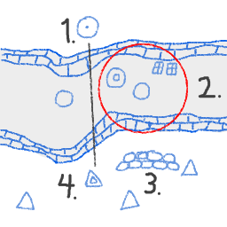
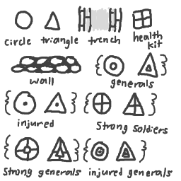

TRENCH GAME (WORKING TITLE)
HIGH CONCEPT
I came up with a turn-based strategy game that I would play using a coin, a pencil, and an index card during
middle school when I should have been paying attention in class.
I'm very fond of this game and I want to be able to play it on my phone.
In the game, two players lead battling armies of shapes (circles and triangles), and luck is constantly
switching sides.
GENRE
Turn-based, strategy, player-vs-player, "just one more turn". Maybe more even!
PLATFORM
The game was imagined with index cards so I believe it would fit perfectly on phones. It should be resizable
easily to any larger screen.
STORY
The circles and the triangles are at war again. It's abstract. You each pick a side and then your circles and
triangles shoot at each other.
AESTHETICS
The original paper game was black on white, and line-drawn in a messy way that I want to replicate. If that
doesn't work out, clean lines, or even a new style using themed sprites, would work too.
I would like to do exciting things with sound, but so far I think the game only needs simple sounds.
GAMEPLAY
This has been refined for the paper version but all this is subject to change as we transition to web.
As I see it now, here is the game loop:
- Turns are decided at random. Whoever gets the turn may either move or shoot.
- If they choose to move, they can move a member of their army. (If they move a general, they can move a
larger group of other members around that general.)
- If they choose to shoot, the soldier they choose will fire one shot. They aim towards the user's next tap or
click.
- Soldiers will have larger circles drawn around them to show their area of movement, and this includes what
they can or cannot pick up.
- Bullets can be blocked by obstacles in the level, so soliders can take cover. Bullets can also be hidden
from if your soldiers are in a trench. That's why the name is Trench Game.
- I know I said up above that you can only use a turn to move or shoot, but actually you can also have
soldiers pick up health packs if they are nearby.
- Soldiers have three levels of health. Regular soldiers have two lives left. If they are shot, they get a dot
drawn on them. If they pick up a health pack, they return to regular health. Regular health soldiers who
pick up health packs become "strong", and have three lives.
MOCKUPS
I wish I still had the original index cards on me to show. Here's an idea of how one looks, and then the basic
elements all laid out.

- This circle has been shot once. The black line is the shot from the triangle heading at it. Soldiers can be
shot twice before they are out.
- The red circle shows the circle's area of movement or interaction. That soldier can pick up one of the
health kits, or move around in the trench they're in.
- This is a sandbag wall.
- This triangle is a general. If you moved it, you could also move the other three triangles.

I'm aware that some of the indicators might not be very readable. I might need to work on them. Further
playtesting is required.
OTHER
I liked using pixiJS and Howler, so I will keep using those.
ABOUT THE DEVELOPER
I'm William O'Brien and this is my project. I am a second year Game Design and Development student.
I've been making games for a long time but I've only recently got into software in-depth. It's fun!
I'm looking to develop my software engineering skills further. Right now I'm proficient in C#, Unity, HTML, and
CSS. I'm working on Javascript, the pixiJS and Howler libraries, and Processing.
I also love to make music.
DOCUMENTATION
Now that the game is in the works, it's time to talk about what I did.
PROCESS
-
I started by implementing the basics from Circle Blast, because it uses the same tech stack. I got PixiJS and Howler.js
running and set up multiple scenes for the different sections of the game.
-
The first things I implemented were the main ES6 classes for circles and squares. I uickly dropped the
idea of using triangles because it is harder for PIXI.Graphics to draw them, and bullet collision detection
with squares feels more accurate (and therefore fairer).
-
Next I worked on the rest of the classes in the scene, which includes environment parts (trenches, walls)
and gameplay objects (health kits and bullets). The user interface elements are also ES6 classes.
-
Finally I worked on the gameplay. This took the longest time and had the most design challenges.
This was where I added player control finally, moved bullets and checked
for hits with a delta time game loop, and implemented the health system.
-
Converting a paper-and-pencil game to digital was easier than starting fresh because I had a set of rules.
It was, however, much harder than I ever expected to communicate those rules on the screen. This is why I wrote
the instructions page, but I also wanted things to be intuitive when you used them, even once you knew the rules.
I improved the control circles with labels and explained that generals move squads through the move tooltip.
I also hope that making the generals' move circle larger helps indicate that they serve as people-movers for their team.
-
Finally I cleared up some bugs and commented everything I missed, and did a good proofreading job overall. Then I remembered sound.
-
I don't have as much sound as I wanted, but I'm proud of the sounds.
I took my electric guitar, plugged it into a noisy speaker, and played the game while imagining what sort of response
sounds and environment noises I would want the game to make. All along I was making scratches and plops and plinks
with the guitar and recording them. With a noisy speaker, you don't have to play the guitar in order to get neat
little sounds. You just have to tap it. Then I cut out all the sounds in Audacity (they got recorded in Ableton
Live Lite though, which you can get for free at Splice.com until December 31, 2020!))
-
Adding sound so late in the production process made some new problems for the game flow. I recorded a start-up
sound I was very happy with, but Chrome has a rule about playing sounds on start-up.
howler.min.js:2 The AudioContext was not allowed to start. It must be resumed (or created) after a user gesture on the page.
Long story short, I needed something to make the user interact with the page before chrome would let the sound play, and currently
the sound played at the beginning of my title screen. With the title screen being the very first thing to show up, I needed to add
something in to happen first. This is where the "tip screen" came from. This ended up being easier than I expected, considering
I was shuffling a whole new scene into the order of everything that happens in the game. It did require me to refactor
a lot of the "titles and text" section of main.js, along with the setup() function. In the end, I think it resulted in everything
being in a better place.
SOURCES
- I used the Circle Blast homework tutorials a lot to deal with PixiJS and Howler, as well as learning how to implement a game loop.
- I used coolors to find colors for the scene.
- Prof. Chin's PixiJS tutorials were extremely helpful for understanding PIXI.Graphics, and then extremely helpful again later for understanding Pixi's interactive pointer events.
- I used Prof. Eric Baker's trigonometry tutorial to figure out how to aim bullets at the mouse.
- The PixiJS API documentation made this game possible. Without it there would be no shapes.
- And finally, I learned to use timer events thanks to w3schools.com and their wonderful Tryit Editor. They also helped a lot with general ES6 syntax that I don't always know.
- I would also like to thank the crit group for style advice, and my professors for debugging with me this year. 235 made me like the web.
Go Home
Get Ableton Live 10 Lite for Free